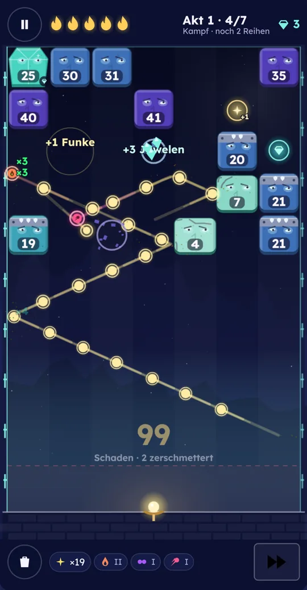
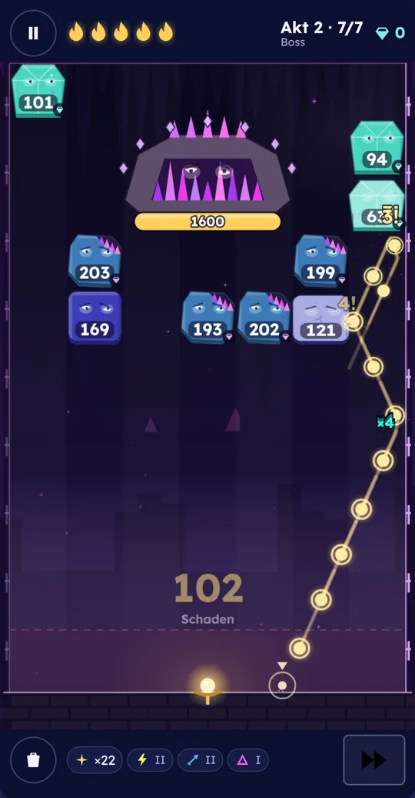
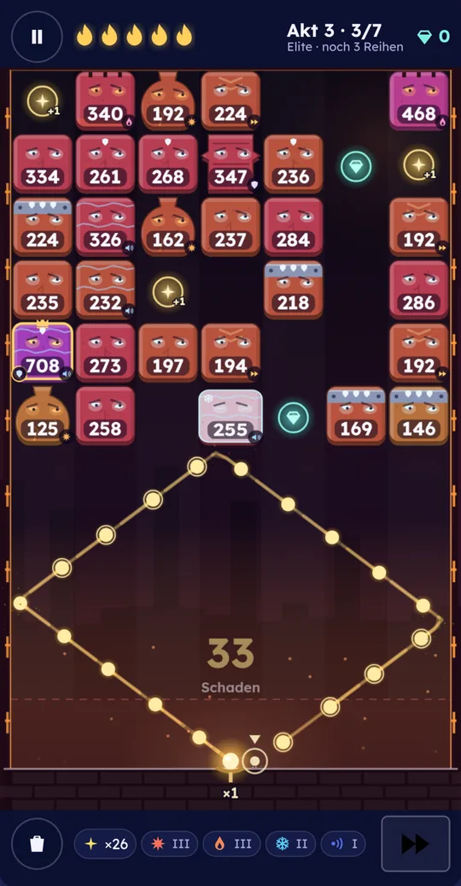
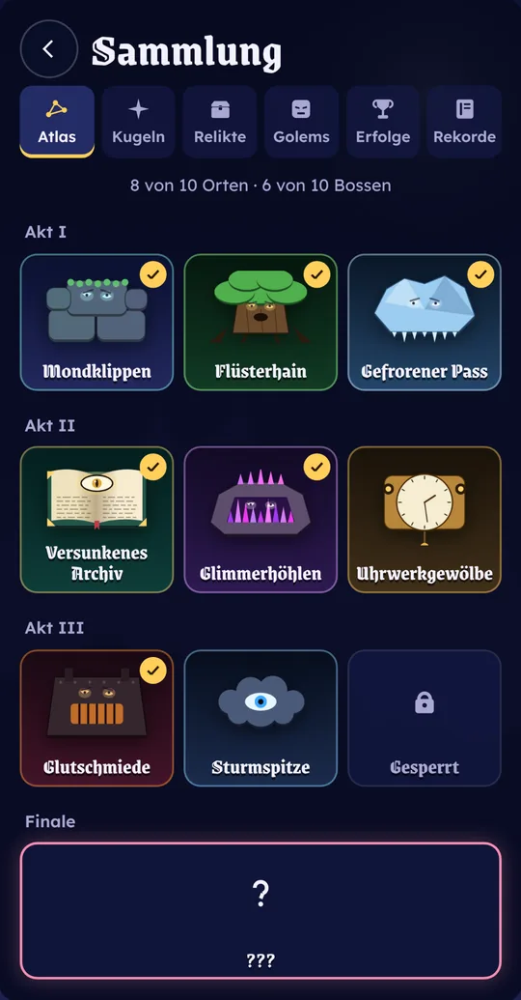
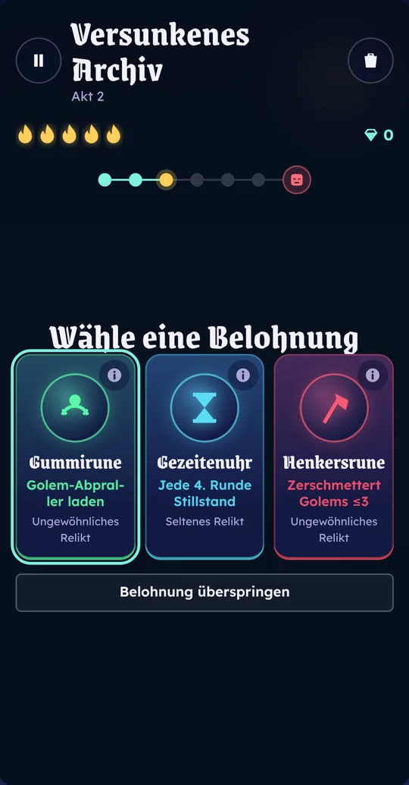

Caromancer
Jeder Abprall macht deinen Zauber stärker.
Ein rundenbasiertes Roguelite, das du mit einem Daumen spielst. Ziehen zum Zielen, loslassen – und deine Kugeln prallen durch eine Flut runenverzierter Steingolems.

So läuft eine Runde
Zielen
Ziehe irgendwo auf dem Spielfeld. Die Ziellinie zeigt, wo deine ersten Abpraller landen.
Über Bande
Jeder Abprall an einer Wand oder der Decke bringt eine Bande: +50 % Schaden für diese Kugel.
Zerschmettern
Nach jeder Salve rücken die Golems vor. Räume die Ebene, bevor sie deine Laterne erreichen.
Zehn Orte, zehn Bosse
Jeder Lauf führt durch drei Akte aus zehn Orten, die sich öffnen, wenn du ihre Wächter besiegst. Jeder Ort hat eigene Golems und einen eigenen Boss: eine Geodenkönigin, deren Hülle nachwächst, einen Uhrmacher, der Schaden zurückspult, einen Hohlen Stern, der deine Ziellinie verschluckt.




Builds, die eskalieren
Wähle zwischen den Kämpfen aus 14 Kugeln und 42 Relikten. Zwillinge, die sich teilen, Kettenblitz-Volts, explodierende Novas, vorgeladene Kometen – staple sie, bis eine einzige Salve Tausende Schaden macht.
Fair von Grund auf
- Keine Energie, keine Timer, keine Lootboxen.
- Werbung läuft nur, wenn du sie wählst: um einen Lauf neu zu entfachen oder Sternenlicht zu verdoppeln.
- Alles, was das Spiel verändert, wird erspielt.
- Komplett offline spielbar. Kein Konto.
Viel zum Wiederkommen
Sechs Helden, zehn Finsternis-Stufen, Tagesriss, Wochen-Herausforderung, Bossjagd, sechs Prüfungen, Endlos-Modus, 39 Erfolge, Meisterschaftsziele pro Held, teilbare Seed-Codes und 13 Kugelstile. Auf English, Español, Português, Français, Deutsch und 日本語.